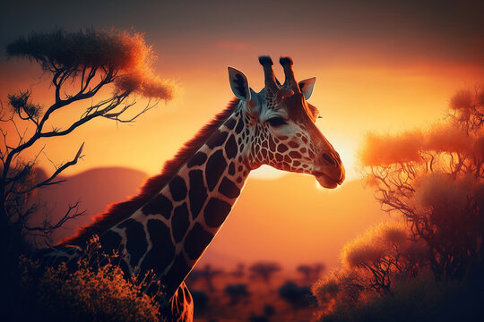

My Favorite Animal - Giraffe

More about Giraffes
To learn more about giraffes, Click here!
Interesting Facts about Giraffes:
- Giraffes are the tallest mammals on Earth. Their legs alone are taller than many humans—about 6 feet.
- They can run as fast as 35 miles an hour over short distances, or cruise at 10 mph over longer distances.
- A giraffe's neck is too short to reach the ground. As a result, it has to awkwardly spread its front legs or kneel to reach the ground for a drink of water.
- Giraffes only need to drink once every few days. Most of their water comes from all the plants they eat.
- Giraffes spend most of their lives standing up; they even sleep and give birth standing up.